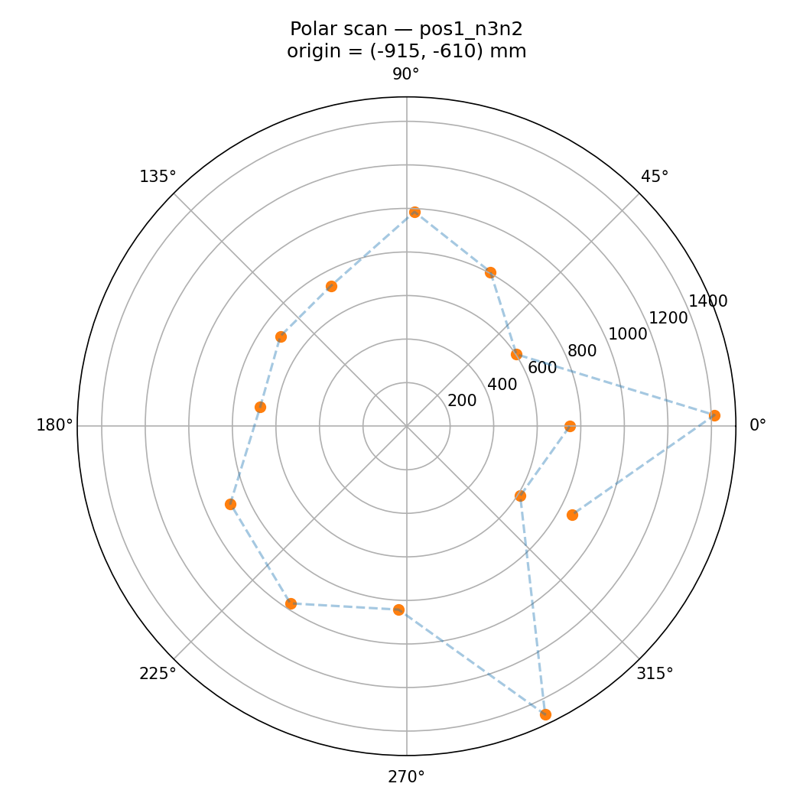
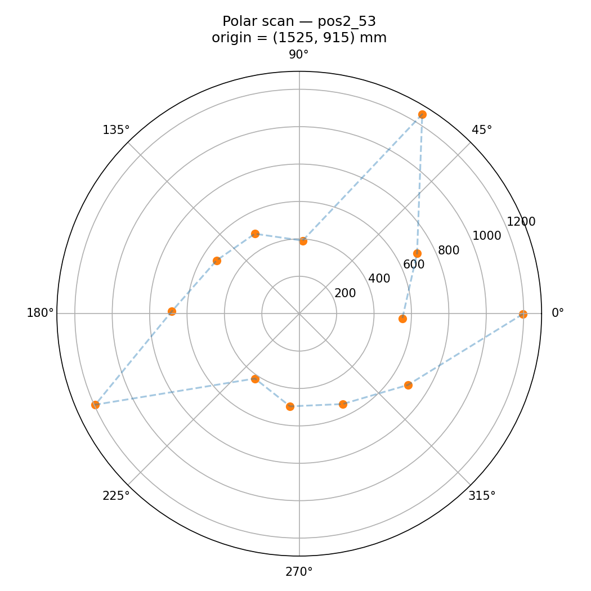
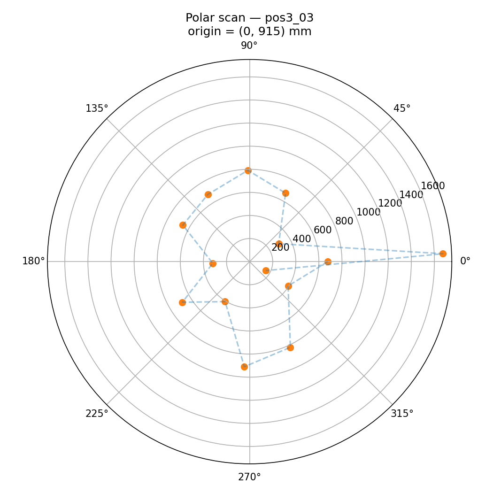
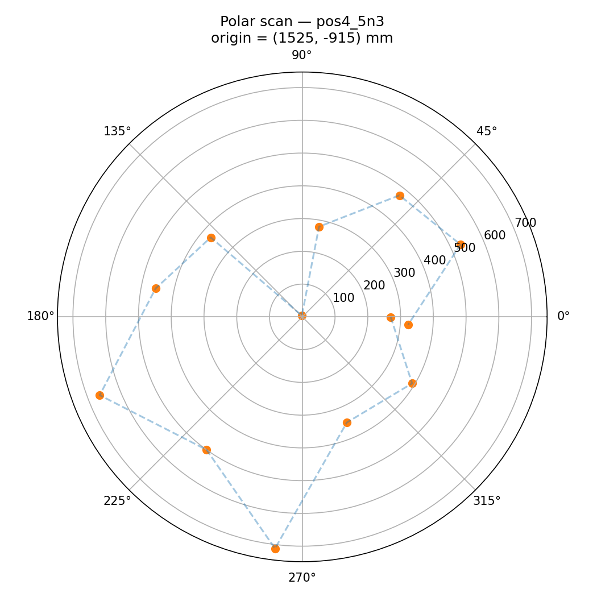
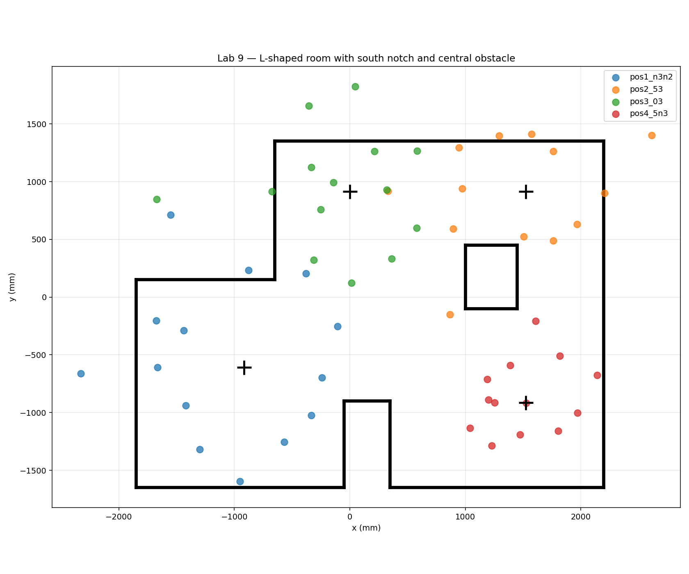

For this lab the robot was placed at four marked positions around the lab front room, spun in place using closed-loop angular speed PID, and recorded ToF distance readings throughout. The readings were then transformed from each robot's local frame into the room's world frame and merged into a single scatter plot, from which I manually traced a line-based map of the room geometry for use in Lab 10.
I went with the angular speed PID option (7.5 point version) because the lab tile incrementing approach in orientation PID had issues with my spin() deadband mapping (any non-zero PID output got mapped through SPIN_DEADBAND, making the controller jump like crazy), and angular speed PID gave me more reliable small motions since I could control anticipating the motion (feedforward) right at the deadband threshold.
// Angular speed PID with anticp. bias
float omega_error = MAP_TARGET_OMEGA - map_gyro_filtered;
map_omega_integral += omega_error * dt;
float pid_out = MAP_OMEGA_KP * omega_error
+ MAP_OMEGA_KI * map_omega_integral;
float pwm_cmd = MAP_FF_PWM + pid_out; // FF at deadband
raw_spin((int)constrain(pwm_cmd, 0, 255));
The feedforward (MAP_FF_PWM = 155) sits right at the deadband so the PID has authority in both directions; without it the integrator would have to wind all the way up to ~150 before the wheels even moved. A low-pass filter on the gyro feedback (alpha = 0.15) keeps the controller from following just noise.
My first continuous-spin runs produced really messy polar plots because the ToF sensor reports false outputs when the distance to the target changes significantly during a single integration window. The lab instuctions warn about this (I wanted to try anyway haha). To fix it I made the loop a small state machine: spin under PID for one segment (15°), stop, wait 200–300ms for inertia and the ToF to settle, then take a single stationary reading. Closed-loop control is preserved (PID still drives the rotation) but every reading is taken with the chassis fully still.
case MAP_TURNING: {
float seg_delta = yaw - map_yaw_at_segment_start;
if (fabs(seg_delta) >= MAP_SEGMENT_DEG) {
stop_motors();
map_state = MAP_SETTLING;
return;
}
// breakaway kick and then speed PID below
}
My initial mapping loop integrated yaw using dt = (now - last_loop_time) / 1000, but only added gyro_z * dt when imu.dataReady() returned true. Because the mapping loop runs much faster than the 100Hz IMU, dt ended up being the loop period (a few ms), not the time between IMU samples (~10ms), so yaw was being under-integrated by a factor of 5 to 10. The robot was physically rotating way past 360° before the algorithm even noticed, which compressed all the angle stamps, so I made it track a separate map_last_imu_time that only updates when fresh IMU data arrives, so the integration uses the actual sample interval.
Static friction was uneven between the two motors, so at the start of each spin segment one wheel would break free a few ms before the other and the robot would briefly drive in a small arc before settling into in-place rotation. So, I added a brief breakaway kick (MAP_BREAKAWAY_PWM = 250 for 80ms) at the start of every segment to slam both wheels free simultaneously, then drop into the speed PID for the rest of the segment. This didn't *always* work bit it did make it work like 95% of the time. Also the angle-tracking gyro is still running during the kick so it doesn't throw off the reading angle.
Each scan gives me a list of (yaw, distance) pairs in the robot's local frame. To get world coordinates I rotate by the yaw and translate by the robot's known position. Since the ToF is mounted on the front of the robot pointing along its local +x axis and the offset from the center of rotation is small, the transform reduces to a 2D rotation followed by a translation:
def transform_scan(angles_deg, dists_mm, origin_mm):
# Robot was always physically facing west (-x) at scan start, towards the door
# so add 180° to convert local-frame yaw to world-frame angle.
theta = np.deg2rad(angles_deg + 180.0)
x0, y0 = origin_mm
xw = x0 + dists_mm * np.cos(theta)
yw = y0 + dists_mm * np.sin(theta)
return xw, ywThe +180° offset is a fixed correction for which way I happened to point the robot at the start of every scan (toward the west wall). I could have just redone it the better direction but I had gone home from lab. In matrix form this is:
[x_w] [cos(θ+π) -sin(θ+π)] [r] [x_r]
[y_w] = [sin(θ+π) cos(θ+π)] [0] + [y_r]Each individual scan looks *roughly* like the outline of the room from that vantage point. Due to my slightly unstable method of mounting the tof sensor, I have a feeling it tilted up and down a little.




After applying the transform and the +180° heading correction, all four scans land cleanly in the same world frame. The merged scatter clearly shows the L(ish)-shaped room geometry, the south-wall notch, and the central rectangular obstacle. I traced wall segments by hand on top of the scatter (the line list is saved as lab9_line_starts.npy and lab9_line_ends.npy for Lab 10).

Because the hybrid approach reads while stationary, in-measurement rotation error is essentially eliminated. The remaining accuracy failure is dominated by probably the gyro drift between segments (~1–3°/sec on the ICM-20948 after bias calibration; over a ~14s scan that's roughly 15–40° of cumulative drift in the worst case) and ToF noise (~20mm). For a 4×4m empty square room scanned from the center, the worst-case diagonal range is ~2.8m, and a 1° angular error at that range projects to ~50mm of tangential displacement. This is comparable to the angular spacing between samples anyway.
Video: Robot doing a hybrid spin-settle-read scan on in the hallway, for example. I didn't realized I needed to take a video before I left, but this still works and shows off the protocol.
Collaborations: Claude for state machine debugging, the gyro integration bug diagnosis, and the report HTML. Referenced past Lab 9 reports, and also